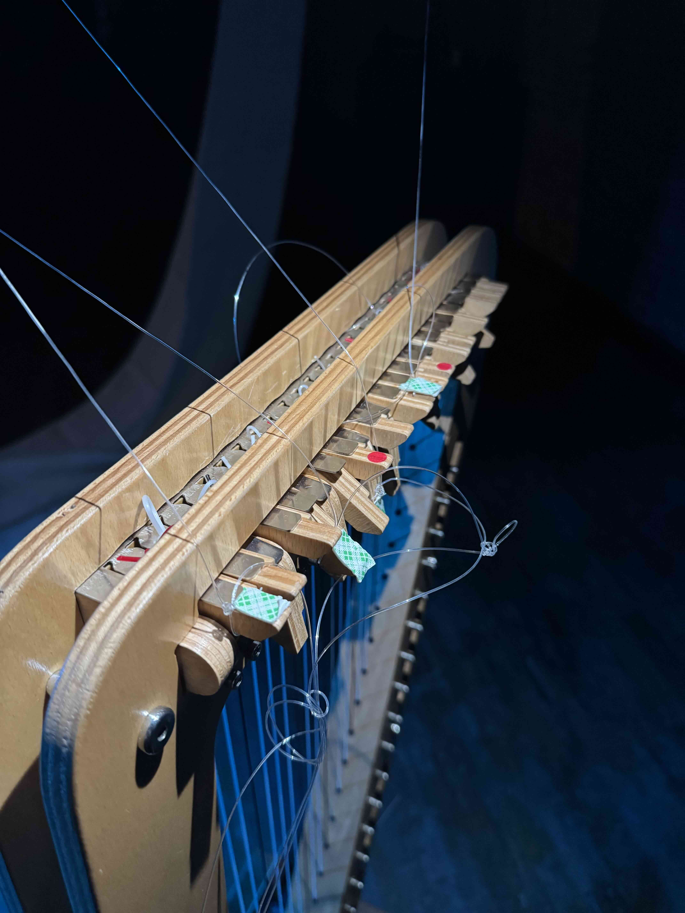
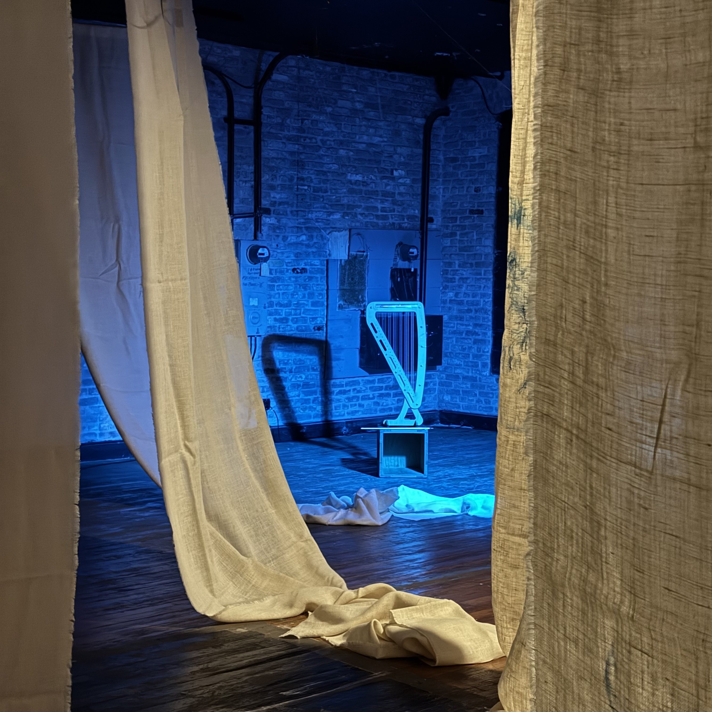
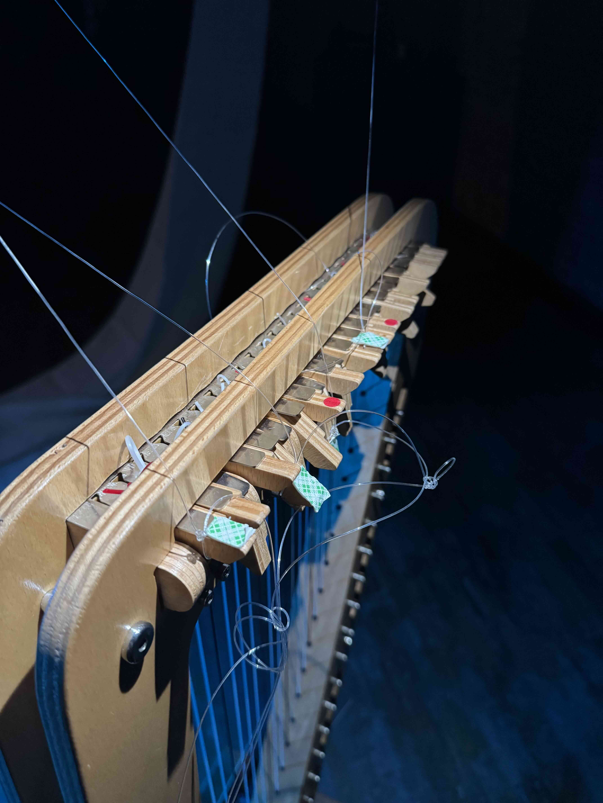
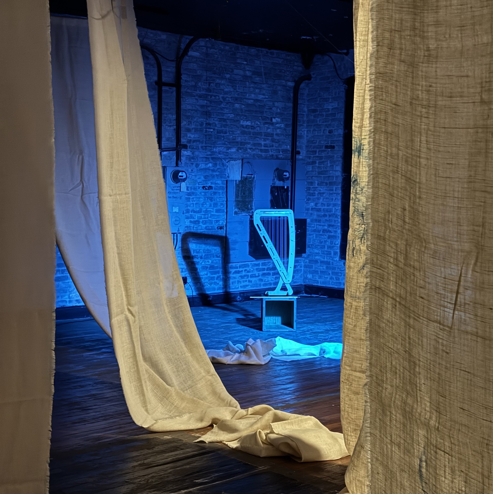

De-dimension(2025)
audience-participatory installation with self-designed interactive instrumental system, audiovisual ecology, and three live improvisers
Oracle Egg, BROILER Series Residency, Los Angeles
The moments are real and alive. The feelings are private, intimate, and personal. Moments and feelings die the instant being documented through recording, filming, and photographing. As prosthetics of human memory, these technologies reshape what it means to remember and to forget. No matter how advanced the technology evolves, documentation only expedites the death process of the moments and feelings. In its quest to preserve, technology ironically speeds up the vanishing of the memories it seeks to save.
In our performance installation, harp strings are extended via fishing lines attached to tuning levers, their ends sewn into coarse woven cloth sourced from Mongolia. Flex sensors embedded within this fabric detect the subtle movements: as the harpist plucks the strings, each vibration transfers through the fishing lines, animating the cloth. This interplay symbolizes the transformation of lived experience—captured through real-time sensor signals—into lasting audiovisual traces. This process unfolds the gesture of documenting a moment — a declaration of death — as no matter how deep the sensors can capture bio-signal and how fast the signal processing could be, once documenting the live moments, it squashed flat, drained of their immediate vibrancy. In today's world, these personal feelings are objectified, commercialized, compared, and sold. What people can grasp and possess is merely a death posture. Feelings fade, memories deteriorate, and humanity's futile grasping leads to its own demise.